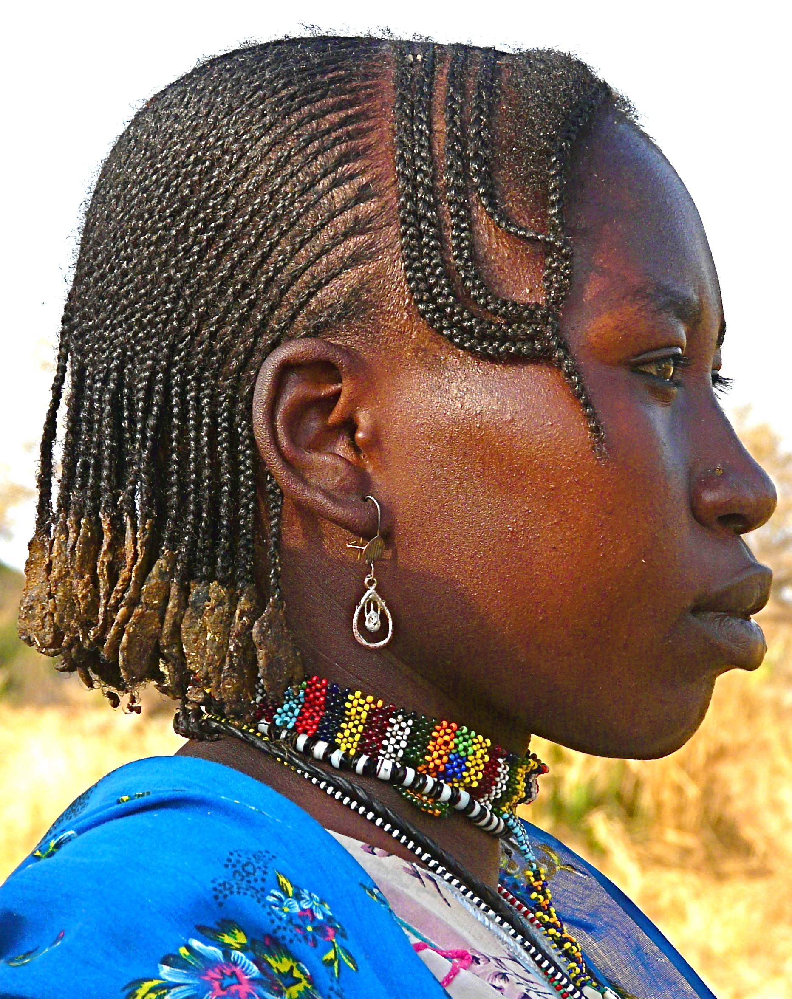
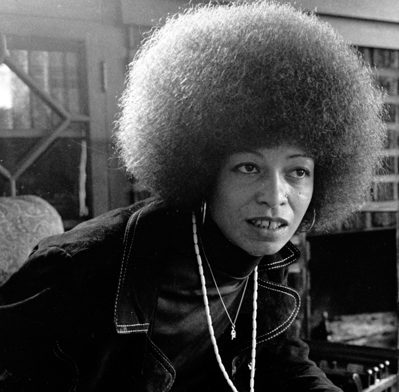
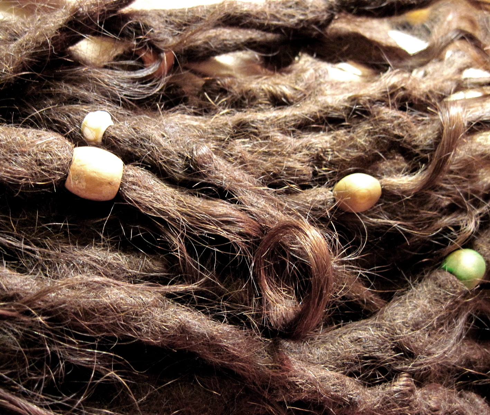
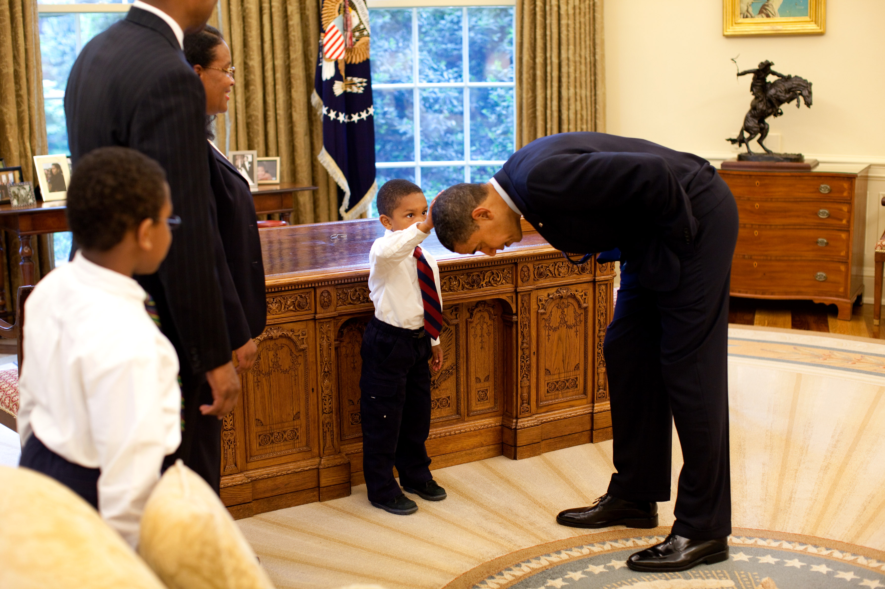

Historically, many cultures in continental Africa developed hairstyles that defined status, or identity, in regards to age, ethnicity, wealth, social rank, marital status, religion, fertility, adulthood, and death. Hair was carefully groomed by those who understood the aesthetic standard, as the social implications of hair grooming were a significant part of community life. Dense, thick, clean, and neatly groomed hair was something highly admired and sought after. Hair groomers possessed unique styling skills, allowing them to create a variety of designs that met the local cultural standards. Hair was usually dressed according to local culture.
In 1960s United States, natural afro-textured hair was transformed from a
simple expression of style into a revolutionary political statement. It became
a fundamental tool of the Black movement in America, and “hair came to symbolize
either a continued move toward integration in the American political system or a
growing cry for Black power and nationalism.” Prior to this, the idealized Black
person (especially Black women) “had many Eurocentric features, including hairstyles.”
However, during the movement, the Black community endeavored to define their own
ideals and beauty standards, and hair became a central icon which was “promoted as
a way of challenging mainstream standards regarding hair”.[14]:35 During this time,
afro-textured hair “was at its height of politicization”, and wearing an Afro was an
easily distinguishable physical expression of Black pride and the rejection of societal
norms. Jesse Jackson, a political activist, says that “the way [he] wore [his] hair was
an expression of the rebellion of the time”. Black activists infused straightened hair
with political valence; straightening one’s hair in an attempt to ‘simulate Whiteness’,
whether chemically or with the use of heat, came to be seen by some as an act of
self-hatred and a sign of internalized oppression imposed by White-dominated mainstream
media. 
At this time, an African-American person’s “ability to conform to mainstream
standards of beauty [was] tied to being successful.” Thus, rejecting straightened hair
symbolized a deeper act of rejecting the belief that straightening hair and other forms
of grooming which were deemed ‘socially acceptable’ were the only means of looking
presentable and attaining success in society. The pressing comb and chemical straighteners
became stigmatized within the community as symbols of oppression and imposed White beauty ideals.
Certain Black people sought to embrace beauty and affirm and accept their natural physical traits.
One of the ultimate goals of the Black movement was to evolve to a level where Black people
“were proud of black skin and kinky or nappy hair. As a result, natural hair became a symbol of
that pride.”Negative perceptions of afro-textured hair and beauty had been passed down through
the generations, so they had become ingrained in Black mentality to the point where they had been
accepted as simple truths. Wearing natural hair was seen as a progressive statement, and for all
the support that the movement gathered, there were many who opposed natural hair both for its
aesthetics and the ideology that it promoted. It caused tensions between the Black and White
communities, as well as discomfort amongst more conservative African-Americans.
The style of afro-textured hair continues to be politicized in contemporary society. “These issues of style are highly charged as sensitive questions about very ‘identity’.” Whether an individual decides to wear their hair in its natural state or alter it, all Black hairstyles convey a message. In several post-colonial societies, the value system promotes ‘white bias’, and “ethnicities are valorized according to the tilt of whiteness—[which] functions as the ideological basis for status ascription.” In turn, in this value system, “African elements—be they cultural or physical—are devalued as indices of low social status, while European elements are positively valorized as attributes enabling individual upward mobility”. This value system is reinforced by the systematic racism that was, and still is, often hidden from the public eye in Western society. Racism ‘works’ by encouraging the devaluation of self-identity by the victims themselves, and that re-centering of a sense of pride is a prerequisite for a politics of resistance and reconstruction.
In this system, “hair functions as a key ‘ethnic signifier’ because, compared with bodily shape or facial features, it can be changed more easily by cultural practices such as straightening.” Racism originally “’politicized’ [afro-textured] hair by burdening it with a range of negative social and psychological ‘meanings’” —categorizing it as a problem. 37 Ethnic difference that could be easily manipulated, like hair, was altered in order for ethnic minorities to assimilate into a dominant, Eurocentric society. Natural hairstyles, such as the Afro and dreadlocks, “counter-politicized the signifier of ethnic devalorization, redefining Blackness as a positive attribute”. By wearing their hair as it naturally grows, individuals with afro-textured hair were taking back agency in deciding the value and politics of their own hair. Wearing one’s hair naturally also opens up a new debate: Are those who decide to still wear their hair straightened, for example, less ‘Black’ or ‘proud’ of their heritage, than those who decide to wear their hair naturally? This debate is an often-ongoing topic of discussion within the community. The issue is highly debated and disputed, creating almost a social divide within the community between those who decide to be natural and those who do not.
African-American hair has been through many different cycles. Slavery played a major role in the ups and downs of the pride that African-Americans take in their hair. “Everything I knew about American history I learned from looking at Black people’s hair. It’s the perfect metaphor for the African experiment here: the price of the ticket, the toll of slavery, and the costs remaining. It’s all in the hair. Like Jamaica Kincaid, who writes only about a character named Mother, I’ve decided to write only about hair: what we do to it, how we do it, and why. I figure this is enough”, said Lisa Jones in an essay titled Hair Always and Forever.
In the United States, the successes of the civil rights movement, and the Black power and Black pride movements of the 1960s and 1970s, inspired African-Americans to express their political commitments by adopting more traditionally African styles. The Afro hairstyle developed as an affirmation of Black African heritage, expressed by the phrase, “Black is beautiful.” Angela Davis wore her Afro as a political statement and started a movement toward natural hair. This movement influenced a generation, including celebrities like Diana Ross, whose Jheri curls took over the 1980s. Since the late 20th century, Black people have experimented with a variety of styles, including cornrows, locks, braiding, hair twists and short, cropped hair, specifically designed for afro-textured hair. Natural hair blogs include Black Girl Long Hair (BGLH), Curly Nikki and Afro Hair Club. With the emergence of hip-hop culture and Jamaican influences like reggae music, more non-Black people have begun to wear these hairstyles as well. A new market has developed in such hair products as “Out of Africa” shampoo. The popularity of natural hair has waxed and waned. In the early 21st century, a significant percentage of African-American women still straighten their hair with relaxers of some kind (either heat- or chemical-based). This is done despite the fact that prolonged application of such chemicals (or heat) can result in overprocessing, breakage and thinning of the hair. Rooks (1996) argues that hair-care products designed to straighten hair, which have been marketed by white-owned companies in African American publications since the 1830s, represent unrealistic and unattainable standards of beauty. Sales of relaxers took a great fall among African-American women from 2010 to 2015. Many African-American women gave up relaxers to go back to their natural roots. Celebrities like Esperanza Spalding, Janelle Monáe and Solange Knowles have played with natural hair looks. During the same time period, the number of natural-hair support groups has increased. Research has shown that relaxer sales dropped from $206 million in 2008 to $156 million in 2013. Meanwhile, sales of products for styling natural hair continued to rise. Chris Rock’s documentary Good Hair has shown what many women go through to achieve the “European standard” of hair. “Weaves that cost thousands of dollars and relaxers that take way too much time. Black woman has finally decided that it was simply too much”, according to the documentary.Black hairstyles have been utilized to promote the idea of identity in the Black community. Though this expression of identity has been joyful for the community, it is not celebrated as much in American culture. There have been numerous events in history that have shown disapproval of Black hair styles, some of which have transcended into present day. Black hairstyles that are straight and more reserved seem to be the more accepted styles. Other hair styles may face scrutiny due to their vast difference to the White beauty idealistic hair. The idea of accommodating this White beauty ideal has a strong presence in everyday life, but more specifically the workplace In 1981 Dorothy Reed, a reporter for KGO-TV, the ABC affiliate in San Francisco, was suspended for wearing her hair in cornrows with beads on the ends. KGO called her hairstyle “inappropriate and distracting”. After two weeks of a public dispute, an NAACP demonstration outside of the station, and negotiations, Reed and the station reached an agreement. The company paid her lost salary, and she removed the colored beads. She returned to the air, still braided, but beadless. The Kenyan model Ajuma Nasenyana has criticized a trend in her native Kenya that rejects the indigenous Black African physical standards of beauty in favour of those of other communities. In a 2012 interview with the Kenyan broadsheet the Daily Nation, she said,
“It seems that the world is conspiring in preaching that there is something wrong with Kenyan ladies’ kinky hair and dark skin… Their leaflets are all about skin lightening, and they seem to be doing good business in Kenya. It just shocks me. It’s not OK for a Caucasian to tell us to lighten our skin … I have never attempted to change my skin. I am natural. People in Europe and America love my dark skin. But here in Kenya, in my home country, some consider it not attractive.”
In 2014, Stacia L. Brown relieves her story of feeling anxious about how her hair was styled prior to walking in for a job interview in her article, My Hair, My Politics. Stacia begins her story describing her “Big Chop”, a phrase used to indicate cutting off the relaxed or processed hair. A couple months after her big chop, she entered the Job market and she became very nervous about how her hair would appear to job interviewers. Luckily, none of the interviewers acknowledged her hair in a discriminating way. Stacia later discussed the first appearance of “the bush” in being a political statement and related it to her situation, worried that her hair could be seen as a “professional liability”. Then she made a comparison between her natural hair, which is easier to style, and her relaxed hair, which is more accepted. Stacia also incorporated examples of workplace discrimination toward Black hair styles. She recalls how, “the Congressional Black Caucus took the U.S. military to task for its grooming policies, which barred cornrows, twists, and dreadlocks.” Stacia follows up with another example from the same year in which the Transportation Security Administration has “come under fire for disproportionately patting down black women’s hair—especially their Afros.” She continues saying how, “It’s a practice TSA only agreed to stop a few months ago, when the agency reached an agreement with ACLU of Northern California, which had filed a complaint in 2012.” The perception of afro-textured hair, in the eyes of one with this hair type, may prefer to style their hair in a way that accentuates their racial background or they may conform to a more European hair style. In 2016, the article, Beauty as violence: ‘beautiful’ hair and the cultural violence of identity erasure, discussed a study that was conducted at a South African University using 159 African female students. They had to look at 20 pictures of various styles of Afro-textured hair and categorized these styles as one of four types: African Natural Hair, Braided African Natural Hair, African Natural Augmented Braid, and European/Asian Hairstyles. The results showed that “only, 15.1% of respondents identified the category of African natural hair as beautiful.” Braided natural hair had 3.1%, braided natural augmented hair had 30.8%, and European/Asian hair had 51%. Toks Oyedemi, author of this article, speaks on these findings as, “evidences the cultural violence of symbolic indoctrination that involves the perception of beautiful hair as mainly of a European/Asian texture and style and has created a trend where this type of hair is associated with being beautiful and preferable to other hair texture, in this instance, natural African hair.” This article, shows the unfortunate and telling truth of how African girls feel about their own hair, a perception that demonstrates a lack of self acceptance.
During the 19th century, throughout the West Indies, the teachings of Jamaican political leader Marcus Garvey encouraged an active rejection of European standards of beauty. The resulting Rastafari movement of the 20th century has maintained that the growth of freeform dreadlocks is related to spiritual enlightenment, largely informed by the Biblical Nazirite oath. The Rastafari movement has been so influential in the visibility and subsequent popularity of dreadlocks, throughout the Caribbean and in the global African diaspora, that the term “rasta” has become synonymous with a dreadlocked individual. Today, dreadlocks are common among Afro-Caribbeans and Afro-Latin Americans.